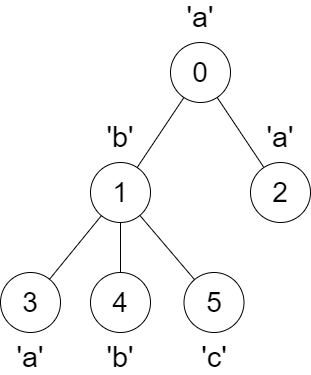
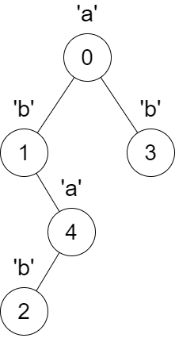

| Category | Difficulty | Likes | Dislikes |
|---|---|---|---|
| Algorithms | Medium | 103 | 37 |
array | hash-table | string | tree | depth-first-search
You are given a tree rooted at node 0 that consists of n nodes numbered from 0 to n - 1. The tree is represented by an array parent of size n, where parent[i] is the parent of node i. Since node 0 is the root, parent[0] == -1.
You are also given a string s of length n, where s[i] is the character assigned to node i.
We make the following changes on the tree one time simultaneously for all nodes x from 1 to n - 1:
y to node x such that y is an ancestor of x, and s[x] == s[y].y does not exist, do nothing.x and its current parent and make node y the new parent of x by adding an edge between them.Return an array answer of size n where answer[i] is the size of the subtree rooted at node i in the final tree.
Example 1:
Input: parent = [-1,0,0,1,1,1], s = "abaabc"
Output: [6,3,1,1,1,1]
Explanation:

The parent of node 3 will change from node 1 to node 0.
Example 2:
Input: parent = [-1,0,4,0,1], s = "abbba"
Output: [5,2,1,1,1]
Explanation:

The following changes will happen at the same time:
Constraints:
n == parent.length == s.length1 <= n <= 1050 <= parent[i] <= n - 1 for all i >= 1.parent[0] == -1parent represents a valid tree.s consists only of lowercase English letters.